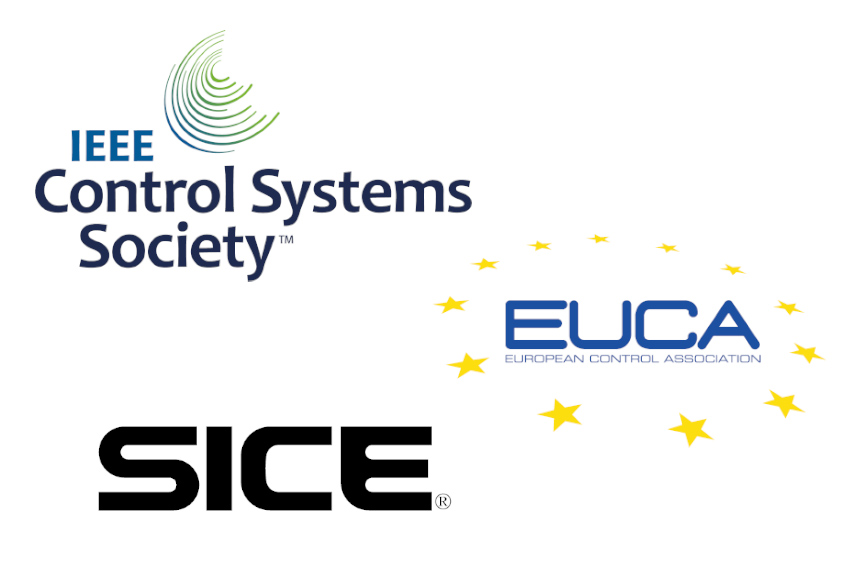
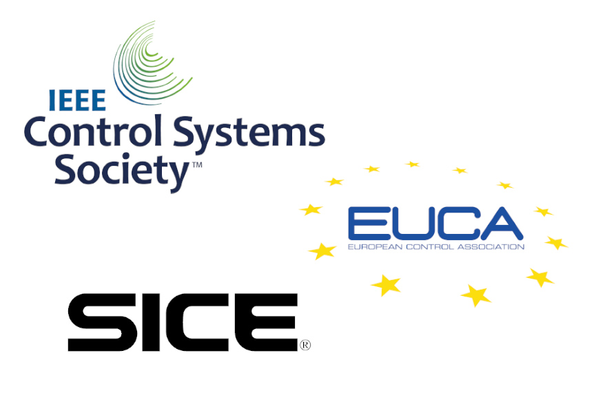

Speaker: Yiheng Feng
Assistant Professor, Purdue University, USA
Dr. Yiheng Feng is an assistant professor at Lyles School of Civil Engineering, Purdue University. His research interests include connected and automated vehicles (CAVs) and smart transportation infrastructure, with a focus on traffic control with CAVs. He has published more than 50 research articles in top journals, including Nature Communications, Transportation Research Part B/C, and IEEE Transactions on ITS. He is the co-chair of the simulation subcommittee of traffic signal systems committee at TRB, and editorial board member of Transportation Research Part C.
Learn more